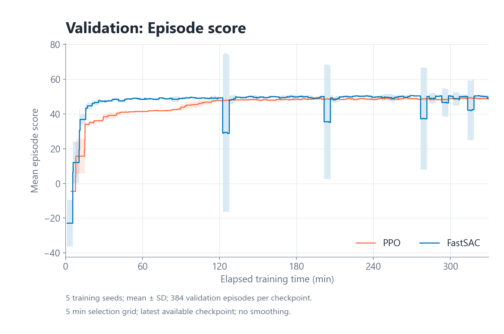
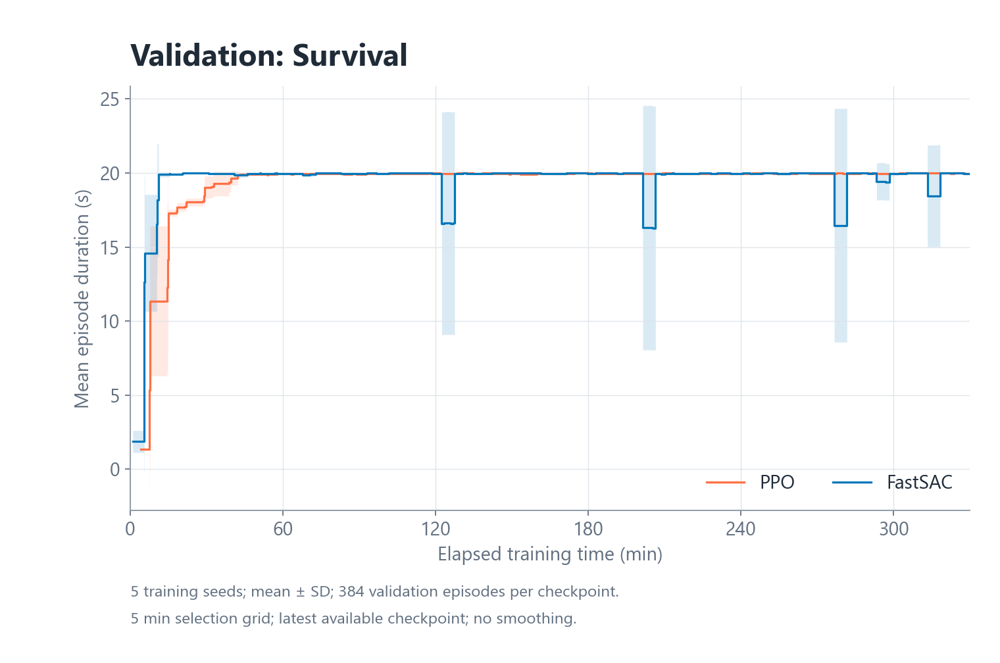
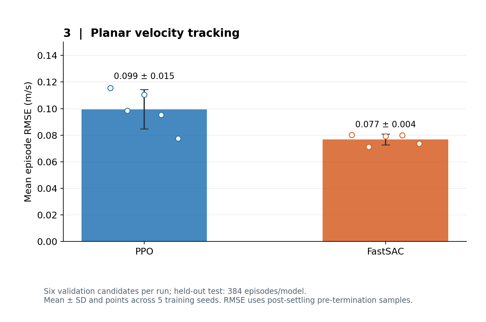

SELECTED PROJECT · 2026
AI Sapiens K1: Humanoid Locomotion Learning
Isaac Lab / Cyclo Lab · Simulation study
From human walking models to humanoid locomotion
My master's research combined a human walking model and a wearable robot in a shared learning environment, followed by deployment of the robot policy to real hardware. This project extended that experience to the AI Sapiens K1 humanoid and explored how an off-policy learning method performs in a new robot and simulator.
I used the PPO baseline in ROBOTIS Cyclo Lab and adapted FastSAC to the same locomotion task. The K1 work reported here was conducted in simulation.
My contributions
- Ran the Cyclo Lab PPO baseline and adapted FastSAC to the same K1 robot, observations, actions, rewards, and environment settings.
- Compared five training seeds per method under a shared 5.5-hour time budget, separating checkpoint selection from held-out testing.
- Reduced the time to first observe 95% of each run's peak mean validation episode score by 70.1%: PPO 117.7 min versus FastSAC 35.2 min, averaged across five training seeds. Checkpoints were sampled on a five-minute time grid.
- Reduced mean planar velocity tracking RMSE by 22.8% in held-out flat-ground simulation tests under the shared training-time budget.
Training and evaluation
Both methods used the same K1 model and task settings, with five training seeds per method. Comparisons used a common 5.5-hour wall-clock budget, including initialization, logging, and checkpoint saving.
For each run, six checkpoints near the end of the budget were evaluated under identical validation conditions. One checkpoint was selected per run by survival, followed by velocity tracking error. The selected policies were then tested with separate evaluation seeds and matched initial states: eight commands, sixteen initial states, and three evaluation seeds, for 384 episodes per policy.
Evaluation used deterministic policies with frozen observation normalization. These are flat-ground simulation results without external pushes; rough-terrain and K1 hardware transfer were not evaluated.
Time to reach 95% of peak validation score
Off-policy FastSAC reduced the training time to first observe 95% of each run's own peak mean validation episode score by 70.1% relative to PPO.
| Validation milestone | PPO | FastSAC |
|---|---|---|
| First observed reach of 95% of the run's peak mean validation episode score | 117.7 ± 13.6 min | 35.2 ± 8.3 min |
For each training seed, checkpoints were chosen by time alone: the latest saved checkpoint available at each five-minute budget from 5 to 330 min. The 658 unique checkpoints were evaluated using the same eight commands, sixteen initial states per command, and three validation seeds (384 episodes each). Mean episode score includes failed episodes.
Each run's maximum among these evaluated checkpoints defines its own 95% threshold. We report the actual training time of the first checkpoint reaching it, then average across five seeds. No smoothing, hold requirement, or interpolated crossing is used. The five-minute grid and checkpoint availability limit time resolution. This retrospective measure describes approach to each run's own peak, not equal absolute performance or sustained convergence. Evaluation compute was performed after training and is excluded from the training-time axis.


Lines carry forward each seed's most recently evaluated policy and show mean ± SD. They are not a best-so-far envelope. Video policies retain the separate local mean-score selection described below. Per-seed milestone data
Held-out velocity tracking
FastSAC reduced mean planar velocity tracking RMSE by 22.8% relative to PPO under the shared training-time budget.
| Metric | PPO | FastSAC |
|---|---|---|
| Planar velocity RMSE (m/s) | 0.0995 ± 0.0149 | 0.0768 ± 0.0041 |
| Yaw-rate RMSE (rad/s) | 0.1066 ± 0.0334 | 0.0989 ± 0.0049 |

Tracking RMSE excludes the first two seconds and uses observations until episode termination. One episode per method ended before the tracking window and was excluded from RMSE. These measurements describe the tested simulation conditions, not general hardware performance.
Training progress at 15, 70 and 120 min
PPO vs. off-policy FastSAC at 15, 70 and 120 min
Project foundations
ROBOTIS Cyclo Lab provided the K1 simulation task and PPO baseline. The off-policy adaptation was informed by Learning Sim-to-Real Humanoid Locomotion in 15 Minutes (FastSAC). This project applies the method to K1 under the conditions described above.